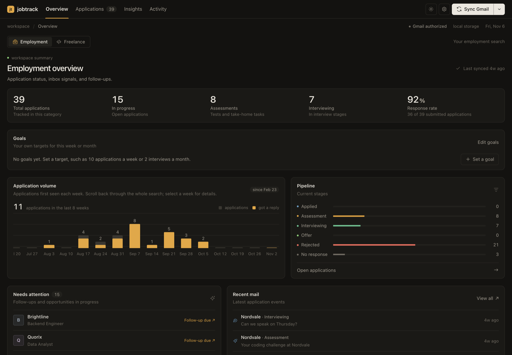

Your job search,
built from your inbox.
jobtrack reads the recruiting mail you already received, postmarks every message with its stage, and keeps the pipeline for you. No spreadsheet to feed.
pipx install jobtrack
Python 3.10 or newer on macOS, Linux and Windows. Free, MIT license.
Inbox 0 scanned
0Applications
0Interviewing
0Offers
0%Response rate
Timeline
A scripted replay with invented companies. Hover to pause, click an application to open its timeline.
Everything the inbox already knows.
jobtrack reads mail you already have. There is nothing to forward, tag or retype.
- Finds every stage
- Applications, assessments, interviews, offers and rejections, grouped by company and role.
- One timeline per application
- Each email with its sender, date and the snippet that earned its label, plus a link back to the Gmail thread.
- Next steps beside each role
- Notes, follow-up dates, interview times you can add to a calendar, and a list of what needs attention.
- Insights and goals
- Response rate, application volume by week, and your own weekly or monthly targets.
- Corrections that stick
- When the mail disagrees with the label, fix it once. Later syncs keep your correction.
- Web UI and command line
- Browse in the browser, or script it with
jobtrack list --active, CSV export and a weekly digest.
The same interface, running on your machine.

Fictional demo data. Open the interactive demo
It can read your mail. It cannot touch it.
Gmailyour inbox
Your machineSQLite file, no server
senddeletemodifyScope: gmail.readonly
- One narrow permission
- Read-only Gmail. It can never send, delete or modify mail.
- Stored on your machine
- A local SQLite file. No account, no telemetry, no server run by the project.
- Your choice of model
- Offline rules by default. Optionally add a local model or your own key; with a hosted provider, the email being classified is sent to it.
Install it in a minute.
pipx install jobtrack
Then jobtrack auth and jobtrack serve. The README walks through creating your own Google OAuth client, the one setup step.